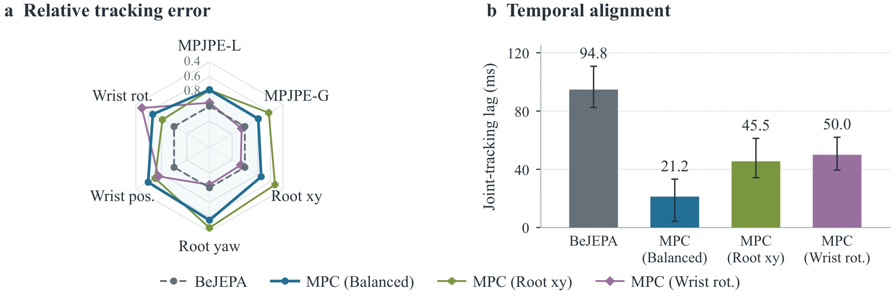
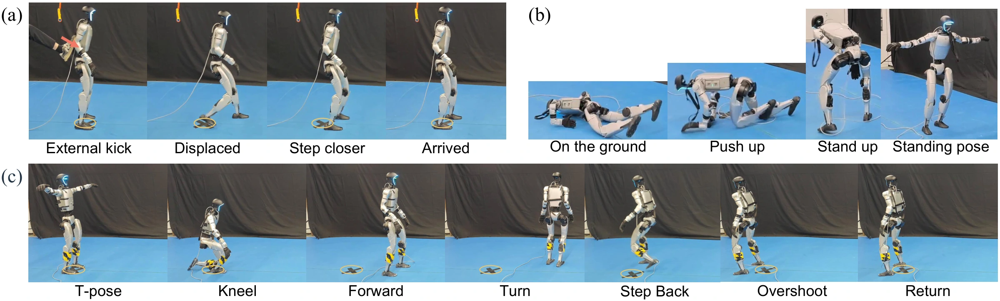

Global body-position error
219.5 mm
Global MPJPE on AMASS.
61.7% lower than BFM-Zero (world)
and 58.7% lower than SONIC.
World-anchored whole-body control on the Unitree G1.
BeJEPA learns a goal-conditioned behavior world model for humanoid control through unsupervised reinforcement learning from human motion priors and robot interaction. It represents whole-body posture, world position, and heading in a shared latent space. A Dynamic Predictor models immediate action consequences, while a Successor Predictor summarizes expected long-term behavior. Their composition guides policy learning without long imagined rollouts, and Dynamic further refines actions at inference time. BeJEPA improves world-coordinate motion tracking and enables a physical Unitree G1 to reach joint posture and world-pose goals, stand up from the ground, and return after disturbances and goal changes.


One physical prediction, one behavioral summary. Dynamic predicts the next state embedding under an action; Successor predicts discounted future embeddings under a goal-conditioned policy. Both train the shared encoder, and their composition trains the actor to choose actions by their long-term goal alignment. At inference, the same Dynamic Predictor supports model-predictive action refinement for more precise spatial and temporal tracking.
Coordinating whole-body posture, world placement, and execution timing.
219.5 mm
Global MPJPE on AMASS.
61.7% lower than BFM-Zero (world)
and 58.7% lower than SONIC.
94.8 → 21.2 ms
Mean signed joint-tracking lag on AMASS.
BeJEPA → BeJEPA-MPC (Balanced),
using the same pretrained weights.
BeJEPA-MPC (Balanced) achieves the lowest global body-position and root errors among the compared methods on both datasets. Local posture and wrist errors are reported alongside them to show the trade-offs in world-coordinate tracking.
| Method | Global MPJPEmm ↓ | Local MPJPEmm ↓ | Root error↓ | Wrist error↓ |
|---|---|---|---|---|
| BFM-Zero (world) | 573.4 | 97.1 | 0.801 | 32.4 |
| SONIC | 531.5 | 49.7 | 0.571 | 15.3 |
| Humanoid-GPT | 832.4 | 115.7 | 1.107 | 27.5 |
| BeJEPA | 278.0 | 82.3 | 0.377 | 25.9 |
| BeJEPA-MPC (Balanced) | 219.5 | 63.9 | 0.255 | 16.3 |
| Method | Global MPJPEmm ↓ | Local MPJPEmm ↓ | Root error↓ | Wrist error↓ |
|---|---|---|---|---|
| BFM-Zero (world) | 797.1 | 89.3 | 1.020 | 25.8 |
| SONIC | 887.5 | 77.8 | 0.971 | 23.6 |
| Humanoid-GPT | 1433.1 | 127.9 | 1.720 | 29.7 |
| BeJEPA | 584.5 | 81.9 | 0.716 | 24.3 |
| BeJEPA-MPC (Balanced) | 543.8 | 75.3 | 0.639 | 20.1 |
Bold and underline mark the best and second-best values. Root error = xy error (m) + 0.01 × yaw error (degrees); wrist error = local position error (cm) + 0.5 × orientation error (degrees).
Evaluation uses selected, non-interactive 20-second AMASS and LAFAN segments with the 29-actuator G1 in MuJoCo at 50 Hz. Trajectories with large spatial deviations are retained.
Dynamic-based MPC refines actions at inference time without retraining. The Balanced setting reduces all six tracking errors, with a mean relative reduction of 31.2% on AMASS and 13.4% on LAFAN over BeJEPA. Changing the MPC cost shifts priority toward root translation or wrist orientation.

On the physical robot, BeJEPA coordinates posture with a persistent world reference: returning after an external kick, standing up from the ground, and switching between goals before returning to the starting location.
